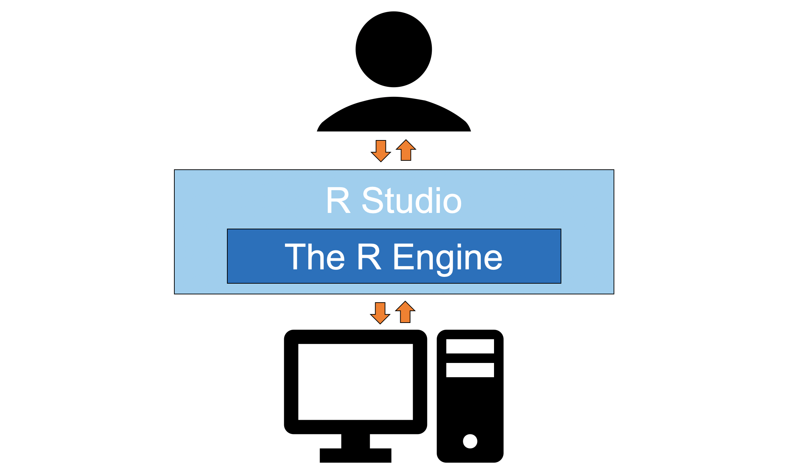

Chapter 3 Getting Started
So what is R?
In the simplest possible terms, R is a programming language used for conducting analyses and producing graphics. It is substantially more flexible than GUI-based statistics programs (e.g., SPSS, LISREL) but less flexible than other programming languages. This lack of flexibility is on purpose; it allows the code to be written in a far more efficient and intuitive way than other programming languages.

Only one piece of software is required to get started using the R programming language and, confusingly, it is also called R. I will refer to it here as the R Engine. The R Engine essentially allows the computer to understand the R programming language, turning your lines of text into computer operations. Unlike other popular statistics programs (e.g., SPSS, SAS), the R Engine is free. Instructions for downloading the R Engine are below.
A second piece of software that is not required to use R but is nonetheless useful is RStudio. RStudio is an integrated development environment (IDE) or, in potentially overly simplistic terms, a tool that makes interacting with the R Engine easier. Instructions for downloading RStudio are also below.
3.1 Downloading the R Engine
- Navigate to the webpage for the Comprehensive R Archive Network (commonly referred to as CRAN).
- Under “Download and Install R” click the appropriate link for your operating system. For example, if you are using a Mac, you would click on Download R for (Mac) OS X.
- Click the link for the latest release. As of writing this, the newest package is
R 4.0.2. "Taking Off Again"(all version nicknames are references to the Peanuts comic strip). I would clickR-4.0.2.pkgto start the download. - Once the file is downloaded, click on it to open it. Your operating system should guide you through the rest of the installation process.
Note. The same steps are used to update the R Engine: You install a new version and replace the old version in the process.
3.2 Downloading RStudio
- Navigate to the webpage for the free version of RStudio. For our purposes (and for most people’s purposes) the free version of RStudio is all that you need. The available installers are listed at the bottom of the page under the header “Installers for Supported Platforms.”
- Select the installer for your operating system. Since I am using Windows 10, I would click
RStudio 1.3.1093 - Windows 10/8/7 (64-bit). - Once the file is downloaded, click on it to open it. Your operating system should guide you through the rest of the installation process.
Note. To update RStudio after it is already installed, all you have to do is navigate to Help > Check for Updates in the menubar.